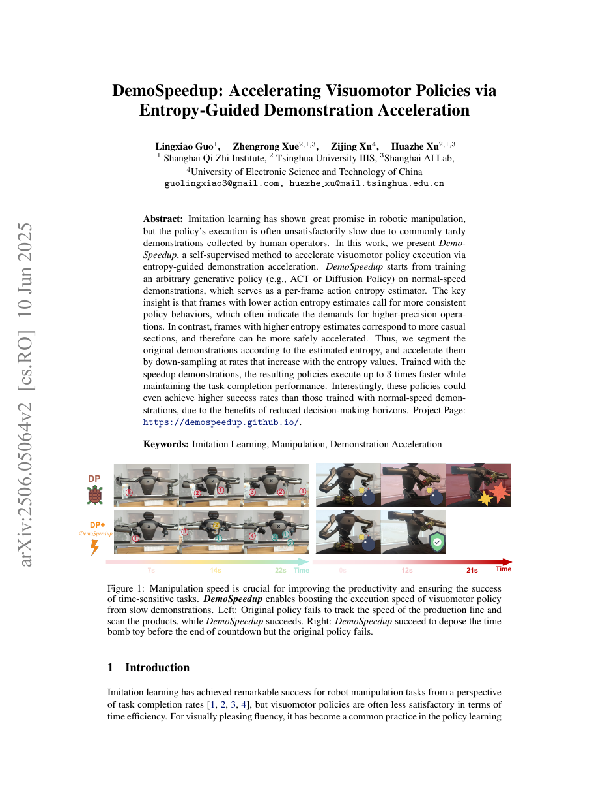

1. Paper Info
DemoSpeedup: Accelerating Visuomotor Policies via Entropy-Guided Demonstration Acceleration
| Authors | Guo et al. (Huazhe Xu 为通讯作者) |
| Year | 2025 |
| Type | 模仿学习 / 视觉运动控制 / 示范数据优化 |
| Source | Guo et al. - 2025 - DemoSpeedup Accelerating visuomotor policies via entropy-guided demonstration acceleration.pdf |
2. Insight & Novelty
2.1 Q&A 核心洞察
人类遥操作员为保证安全和控制精度，动作通常远慢于机器人的物理能力极限。但如果对整段示范做统一倍速（如2x），插入、抓取等高精度阶段会被跳过——这些阶段需要精细的时间分辨率。不同阶段对"时间分辨率"的需求不同，而统一加速无视了这种差异。
核心洞见: 先用原速示范训练一个生成式动作策略（ACT或Diffusion Policy），然后让该策略在示范数据上做推理，逐帧计算输出动作分布的熵。低熵=策略对这一刻该做什么非常确定=动作精度高=需要保留更多的帧（低倍率下采样）；高熵=策略对动作有多样化选择=比较随意=可以激进下采样（高倍率加速）。用熵划分示范后，按段重定时生成加速版示范，再重新训练策略。
2.2 灵感→洞察映射
| 灵感 | 对应核心洞察 |
|---|---|
| 视频压缩中的变比特率(VBR)——静态场景用低码率，动态场景用高码率 | 按段变速——高精度段(低熵)保留更多帧，低精度段(高熵)下采样更多 |
| Bayesian active learning——在不确定区域多采样，确定区域少采样 | 动作熵=不确定度的度量——高熵=不确定=更需要慢动作？不对——恰恰反过来: 高熵意味着"有多种大致等效的动作选择"=不需要精确 |
| 信息论——熵是对随机变量不确定度的度量 | 动作分布的熵直接量化了该时间步的策略confidence——低confidence的动作段反而对时间分辨率不敏感 |
2.3 三大新意卡片
新意1: 动作熵作为"时间精度需求"的代理指标
新意2: 熵到下采样率的单调映射
新意3: 策略无关的示范加速框架
3. Architecture
3.1 架构面板
阶段1: 首轮训练 先验
阶段2: 熵估计 分析
阶段3: 自适应重定时 加速
阶段4: 重训练 部署
3.2 流程图1: DemoSpeedup完整管道
(遥操作采集)"] --> B["首轮训练基准策略
(ACT / Diffusion Policy)"] B --> C["策略在D_orig上逐帧推理
输出动作分布 pi(a|o_t)"] C --> D["计算每帧action entropy
H_t = H(pi(a|o_t))"] D --> E["熵→下采样率映射
低熵→低倍速/高熵→高倍速"] E --> F["自适应重定时
生成加速示范D_accel"] F --> G["用D_accel训练新策略
获得更快执行速度"]
3.3 流程图2: 熵引导的重定时决策
t=1,...,T"] --> SB["计算熵直方图
percentile分档: 低/中/高"] SB --> SC{"帧属于哪个分档?"} SC -->|低熵(精确段)| SD["保留率=1.0
不跳帧 或 skip=0-1帧"] SC -->|中熵(过渡段)| SE["保留率=0.5
skip=1帧(2x加速)"] SC -->|高熵(随意段)| SF["保留率=0.25
skip=3帧(4x加速)"] SD --> SG["生成重定时索引"] SE --> SG SF --> SG SG --> SH["段间线性平滑
防止跳变"] SH --> SI["输出加速示范D_accel"]
4. Task Definition
4.1 解决的问题
加速由人类慢速遥操作采集的真实视觉运动操作示范，在不明显损失任务成功率的前提下减少动作步数和总执行时间。这是一个数据预处理问题——不是训练更快的策略，而是让训练数据本身更快，使得任何模仿学习算法都可以从加速后的数据中学到更高效的策略。
- 输入: 原始遥操作示范集（视频+动作序列，通常30-50Hz），人类操作员因谨慎导致平均执行速度远低于机器人能力
- 输出: 重定时后的示范集（相同任务，更少的帧数和更短的执行时间），保留精确操作阶段的时间分辨率
- 约束: 不能人工标注快慢段；加速后重新训练的策略成功率不能明显下降
5. Key Challenge
5.1 第一性原理分析
本质困难: 时间分辨率需求的空间异质性
一个操作示范不是均匀的——它包含多个阶段，每个阶段对"agent需要多频繁地做出动作决策"有不同需求：
- 接近阶段: 机械臂从远处移向物体——动作粗糙，50Hz中可能每5帧决策一次就足够
- 预抓取阶段: 手指开始张开并对准物体——需要中等精度，约10-15Hz
- 接触瞬间: 手指闭合抓取——这是最精密的时刻，可能需要完整的30-50Hz
- 转移阶段: 已抓稳物体进行移动——再次进入低精度需求
核心问题: 在没有任何人工标注的情况下，如何自动"感知"当前处于哪个精度需求阶段？
DemoSpeedup的答案: 策略本身已经"知道"——通过它输出动作分布的不确定性。这个回答看似循环（先用策略再改进数据），但逻辑链是自洽的：首轮训练的策略在原始数据上已经学到了任务的基本结构，其对不同阶段的确定性差异编码了任务的"精度需求地形图"。
5.2 方法对比表
| 加速方法 | 机制 | 自适应 | 需要新数据? | vs DemoSpeedup |
|---|---|---|---|---|
| 统一倍速 | 所有帧均匀下采样 | 否 | 否 | DemoSpeedup按熵自适应分段下采样 |
| 人工标注快慢段 | 人类划分高速/低速段 | 是（但需要人力） | 否 | DemoSpeedup完全自动 |
| 在线控制频率调节 | 部署时动态改变控制频率 | 是 | 否 | DemoSpeedup在示范阶段(offline)处理 |
| 强化学习训练快速策略 | 在reward中加入时间惩罚 | 是 | 是(sim) | DemoSpeedup不需要仿真/额外数据 |
| DemoSpeedup | 策略熵→自适应下采样 | 是(自动) | 否 | 策略先验+熵引导=无需标注 |
6. Method
6.1 核心公式
对于ACT (Action Chunking Transformer): ACT输出K个action token的离散分布。动作熵通过token-wise熵的聚合估计：
$$ H_t^{\text{ACT}} = \frac{1}{K} \sum_{k=1}^{K} \left(-\sum_{c} p(a_{t,k}=c \mid o_t) \log p(a_{t,k}=c \mid o_t) \right) $$对于Diffusion Policy: 扩散策略通过多步去噪从噪声中采样动作。动作方差通过N次采样估计：
$$ H_t^{\text{DP}} \approx \frac{d}{2}(1 + \log(2\pi)) + \frac{1}{2}\log|\hat{\Sigma}_t| $$其中 $\hat{\Sigma}_t = \frac{1}{N-1} \sum_{n=1}^{N} (a_t^{(n)} - \bar{a}_t)(a_t^{(n)} - \bar{a}_t)^T$，$a_t^{(n)}$是通过N次独立去噪得到的动作样本。
给定每帧的熵值H_t和总帧数T，计算每个熵分位数区间内应保留的帧数。首先计算经验CDF：
$$ F(H) = \frac{|\{t: H_t \leq H\}|}{T} $$目标：在低熵区域分配更多保留帧。给定目标总保留帧数T'，第t帧的保留概率为单调递减函数：
$$ p_{\text{keep}}(H_t) = 1 - (1 - p_{\min}) \cdot F(H_t)^\alpha $$其中alpha > 1控制"低熵偏向"的强度（alpha越大，越倾向保留低熵帧）。p_min保证最低保留率。
按保留/跳过的二进制决策直接执行会导致加速度的剧烈抖动。维护一个平滑的下采样率：
$$ r_t = \beta \cdot r_{t-1} + (1-\beta) \cdot r_{\text{target}}(H_t) $$其中r_{target}(H_t) = 1/p_{keep}(H_t)为瞬时目标下采样率（倍速），beta=0.8-0.95为平滑系数。实际保留的帧索引通过累积积分确定：
$$ \text{keep frame } t \text{ if } \int_{0}^{t} \frac{1}{r_\tau} d\tau \geq \text{next\_integer} $$DemoSpeedup作为一个wrapper不修改下游模仿学习的目标函数：
$$ \pi_{\text{fast}} = \text{ImitationLearning}(D_{\text{accel}}) $$ $$ \text{where } D_{\text{accel}} = \text{Retime}(D_{\text{orig}}; H(\pi_{\text{base}})) $$其中ImitationLearning可以是任意BC/ACT/Diffusion Policy/DDPM等算法。pi_base是在D_orig上训练的首轮策略。
6.2 关键参数表
| 参数 | 含义 | 典型值 | 敏感性 |
|---|---|---|---|
| target_speedup | 目标总加速比 | 1.5x-3x | 高: 决定了加速"激进程度" |
| alpha(偏向参数) | 低熵帧保留偏向强度 | 2-4 | 中: 太高可能只保留<10%帧 |
| beta(平滑系数) | 时序平滑系数 | 0.8-0.95 | 低: 仅影响过渡自然度 |
| p_min | 最低帧保留率 | 0.1-0.2 | 中: 保证最随意段也有最少帧 |
| N(DP采样数) | Diffusion Policy方差估计采样数 | 10-50 | 中: 越多越准确但越慢 |
| 首轮训练步数 | 基准策略训练量 | 50%-100%正常训练 | 中: 策略需足够成熟以产生有意义的熵 |
7. Principles
7.1 深层机理解读
核心原理: 策略不确定性编码了任务的"物理精度需求"
为什么动作熵能成为时间精度需求的良好代理？关键在于生成策略在训练过程中已经内化了任务的因果结构:
- 在接触/抓取时刻，动作稍有偏差就会导致任务失败——策略在这些时刻的训练信号强，学习后的动作分布自然集中（低熵）
- 在自由空间运动时段，存在大致等效的多种动作路径（高了还是低了都能到目的地）——策略学到的是多模态或宽分布（高熵）
因此，熵的"高/低"不是策略好坏的指标，而是动作精度敏感度的指标——这是任务本身的性质，被策略内化后反映在输出分布中。
辅助原理: 示范的时间结构可由学习后的策略"逆向推导"
通常我们是"示范→策略"，DemoSpeedup反转为"策略→更好的示范→更好的策略"——这形成了一个自我改进的闭环。类似思想在RL中常见（self-play, iterated learning），但在模仿学习中不常见。其有效性依赖于一个假设：首轮策略虽不够快，但已正确捕捉了任务的时间精度需求结构。
7.2 范式对比
传统模仿学习
示范→策略。示范质量决定策略上限。如果示范慢，策略也慢。
DemoSpeedup
示范→策略→加速示范→更快策略。策略参与了自身训练数据的改进，形成正反馈。
8. Figures & Evidence

- 正常示范: 全段均匀缓慢——人类操作员在"等待"和"确认"中浪费大量帧
- 统一加速: 全段2x下采样——但插接触瞬间的帧也被丢弃，成功率可能下跌
- 熵引导加速: 高熵段(自由运动)激进加速+低熵段(接触/抓取)几乎原速——在保持成功率的同时大幅缩短总时间
关键证据: 熵引导加速后在保持>90%原始成功率的前提下实现1.5-3x执行加速；统一加速达到相同加速比时成功率显著下降；同时兼容ACT和Diffusion Policy两种主流生成策略架构；消融实验验证了熵引导优于均匀下采样和随机下采样。
9. Potential Flaw
- 熵的多义性: 高熵不一定意味着"随意"——也可能是多模态的高精度决策（如面对分叉路口，策略有两种都正确的选择，每种都很确定，但混合导致高熵）。此时加速会丢失决策分支信息，可能伤害多模态任务的完成。
- 首轮策略质量门槛: 如果首轮训练的策略根本没有学会任务——对全部时刻都高熵（随机输出）——DemoSpeedup将无法工作。论文假设存在一个"可用的"首轮策略，但未定义质量标准。
- 对"快速任务"的边际收益递减: 如果原始示范本身已经很快（如抓取一个物体仅需0.5秒），加速空间有限——DemoSpeedup在快于1秒的任务上效果不显著。
- 熵估计的计算开销: 需要对整个训练集做逐帧推理——对大规模数据集（1000+条示范），首轮推理的开销可能不可忽略。尤其是Diffusion Policy需要N次采样估计方差。
- 动作空间的尺度敏感性: 位置和角度的量纲不同——如果动作空间中混杂了米级平移和弧度级转角，熵的绝对值意义会使不同维度不可比。
9.1 扩展方向
- 多模态熵分解——区分"随意"和"多模态确定"的高熵情况
- 迭代DemoSpeedup——多次round-trip(加速→训练→再加速)是否能持续改进
- 联合优化加速比和成功率——用Pareto前沿的方法自动化speedup选取
- 扩展到on-policy的demonstration refinement——在RL中结合FoG使用
9.2 敏感性分析
| 组件 | 影响 | 等级 | 说明 |
|---|---|---|---|
| target_speedup | ★★★★★ | 极高 | 核心trade-off：越大越快但成功率越低 |
| 首轮策略质量 | ★★★★★ | 极高 | 策略必须基本学会任务才能产生有意义的熵 |
| alpha(偏向参数) | ★★★☆☆ | 中 | 影响低熵段分配比例 |
| 时序平滑beta | ★★☆☆☆ | 低 | 主要影响视觉自然度 |
| N(DP采样) | ★★☆☆☆ | 低 | 10次采样方差估计已稳定 |
| 熵分档数 | ★☆☆☆☆ | 很低 | 3档(低/中/高)已足够 |
10. Motivation
10.1 五步动机链
动作远慢于机器人能力极限"] M2 --> M3["直接训练的策略会复制这种慢速
— 模仿学习忠实复制示范速度"] M3 --> M4["如果能自动识别\"可以加速\"的段
并保留\"必须精确\"的段"] M4 --> M5["不重新采集数据就能获得更快策略
— 释放机器人硬件潜力"]
10.2 一句话动机
遥操作员为保证安全往往动作迟缓，模仿策略会忠实复制这种低效——DemoSpeedup通过策略自身的"confidence map"自动重定时示范，在不重新采集数据的情况下释放机器人更快的执行潜力。
10.3 与UAV操作的相关性
- UAV遥操作同样慢速: 人类遥控飞手在复杂环境(森林/室内)中也会非常谨慎——飞行示范中存在大量的慢速悬停确认段，可以通过DemoSpeedup加速
- 高精度段自动识别: 穿越窄缝、落地瞬间、抓取目标——这些是UAV操作的"高精度段"（对应低熵），其余巡航/悬停等待是高熵段
- 应用于飞行数据: 将DemoSpeedup的视觉观测替换为UAV的下视/前视图像+IMU状态，动作熵同样可用于识别飞行的精度需求段
11. Reading Takeaway
11.1 一句话小结
DemoSpeedup证明: 生成式视觉运动策略自身的动作熵可以作为示范数据中"时间精度需求"的无监督代理指标——低熵段(策略确定)对应需要精细时间分辨率的操作阶段，高熵段(策略随性)可以激进地时间下采样。这种"先用策略理解任务结构，再改进训练数据，最后训练更快策略"的迭代范式，为模仿学习的数据效率提供了新维度。
11.2 关键教训
- 策略不仅能"做"，还能"评": 训练好的生成策略不仅可以在部署时生成动作，还可以在离线时评估数据的质量——动作熵是这种评估的一个简单而有效的metrics
- 数据不应该被"固定": 标准的模仿学习将示范视为"神圣不可更改"的ground truth。DemoSpeedup展示了，通过策略引导的数据后处理可以提升示范质量
- "策略→数据→策略"的迭代闭环: 类似于RL中的self-play和iterated amplification，模仿学习也可以通过策略改进数据的闭环来持续提升
- 简单metrics有时最有效: 动作熵是一个极其简单的统计量，但它巧妙地捕捉了任务的"精度敏感结构"——不需要复杂的任务分解或人工标注
11.3 UAV模仿学习应用展望
- 飞行示范加速: 人类遥控飞手穿越森林的飞行示范通常包含大量"确认安全"的悬停段——DemoSpeedup可自动识别悬停段(高熵)并加速，保留穿越窄缝段(低熵)的细节
- 着陆示范优化: 最后的触地阶段是绝对需要精细时间分辨率的——类似机械臂的接触瞬间
- 多模态飞行: 将飞行策略扩展到多个飞行模式（悬停/巡航/机动），熵可以帮助识别模式切换点
- 结合FoG的完整训练优化: DemoSpeedup(数据预处理加速) + FoG(训练过程优化) = 从数据和模型两个维度完全优化UAV RL训练
11.4 推荐阅读(4-6)
| # | 论文 | 关联 |
|---|---|---|
| 1 | ACT (Zhao et al., 2023) — Action Chunking Transformer | DemoSpeedup验证的主体策略架构之一 |
| 2 | Diffusion Policy (Chi et al., 2023) — Visuomotor Policy via Action Diffusion | DemoSpeedup验证的另一主体架构 |
| 3 | ALOHA (Zhao et al., 2023) — Low-Cost Bimanual Teleoperation | 遥操作示范采集的代表硬件平台 |
| 4 | Waypoint-Based Imitation (Shridhar et al., 2023) — Perceiver-Actor | 使用关键点代替全序列的加速策略 |
| 5 | TeachNet (Xie et al., 2023) — Learning to Teach with Demos | 示范→策略的teacher-student范式 |
| 6 | FoG (Kang et al., 2025) — Forget-and-Grow RL Strategy | 同组的训练优化方法，可与DemoSpeedup组合 |
From local PDF pages 1-5 analysis. See original PDF.